Principal Investigator
Ryan St. Pierre
Assistant Professor
Department of Mechanical and Aerospace Engineering
Department of Computer Science and Engineering
University at Buffalo
ryans@buffalo.edu
Google Scholar
Profile
Postdoc Carnegie Mellon University
Ph.D. University of Maryland
B.S./M.S. Northeastern University
Ph.D Students
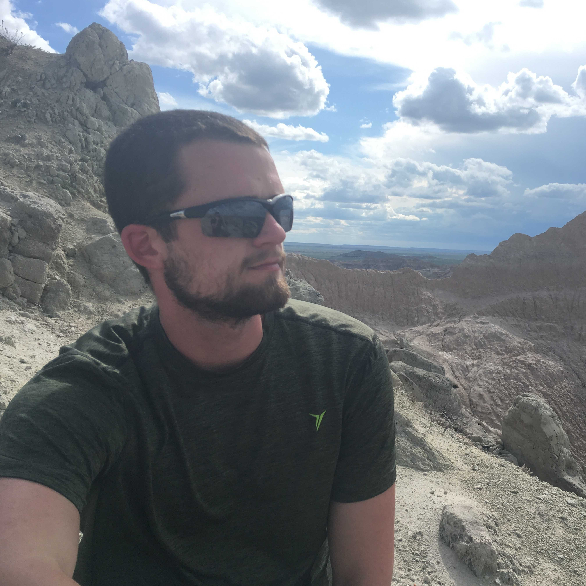
Reed Truax
Ph.D. Mechanical Engineering
B.S/M.E Rochester Institute of Technology - Mechanical Engineering 2019
My research is focused on designing robust controllers for legged locomotion when subjected to
sensing and computation constraints that are often found on micro-robots. Outside of the lab I spend
my time swimming, climbing, hiking, and woodworking.
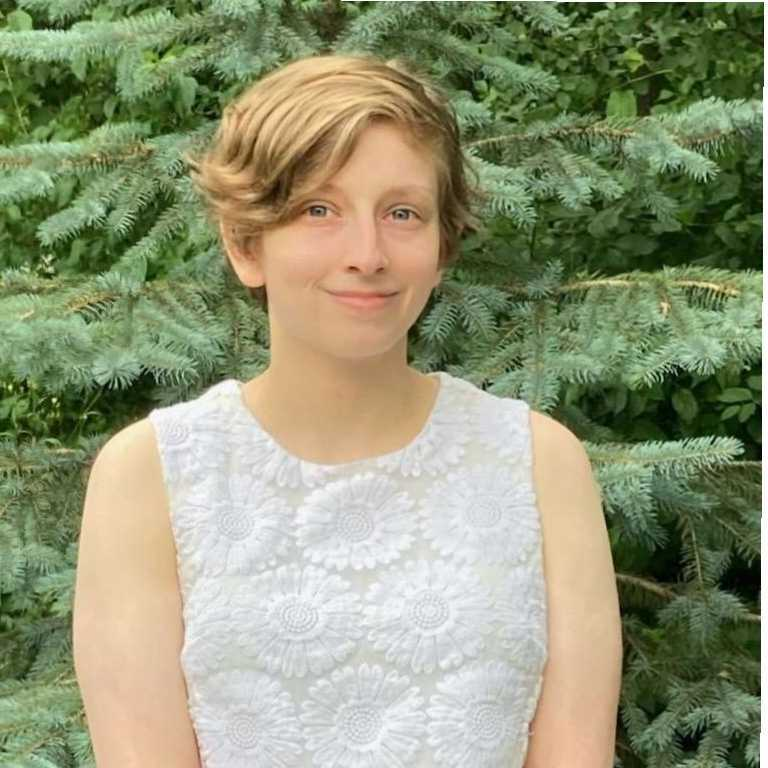
Audra Smith
Ph.D. Aerospace Engineering
B.S Carrol University - Physics 2022
Hi! I am Audra Smith and aerospace engineering Ph.D. student, with a background in applied physics.
I am currently conducting research on robotic metamaterials. In my free time, I enjoy making high
power rockets, writing calligraphy, and watching films.
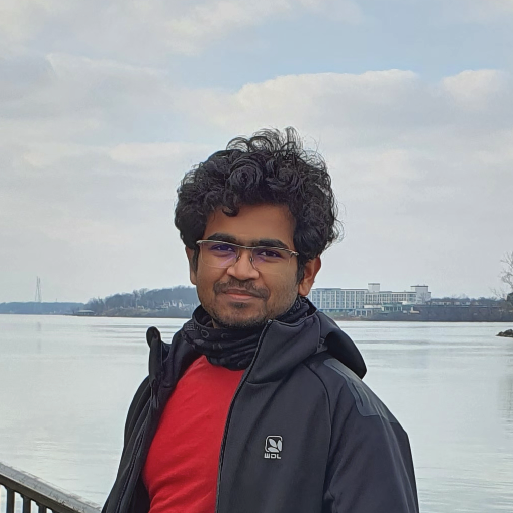
Aniket R Vishwakarma
Ph.D. Mechanical Engineering
M.S. University at Buffalo - Mechanical Engineering 2023
Hello! My name is Aniket R Vishwakarma. I am pursuing a Ph.D. in mechanical engineering in the
Multiscale/Multiphysics Theory and Simulation Lab with Dr. Jiaoyan Li and Robot Form and Function
Lab with Dr. Ryan St. Pierre. My research interests include 'Applied mechanics of Elastic and
Hyperelastic materials,' with extensions in Finite Element Analysis (FEA), Computational Fluid
Dynamics (CFD), High-Performance Computing, soft robots, and stretchable electronics. I was also a
member of the 'Society of Automotive Engineers INDIA (SAE-INDIA)' throughout my undergrad and have
been pleased to be a member of the Formula Student community ever since. I enjoy watching movies,
cooking, traveling, trying new foods, and following Formula 1.
M.S. Students
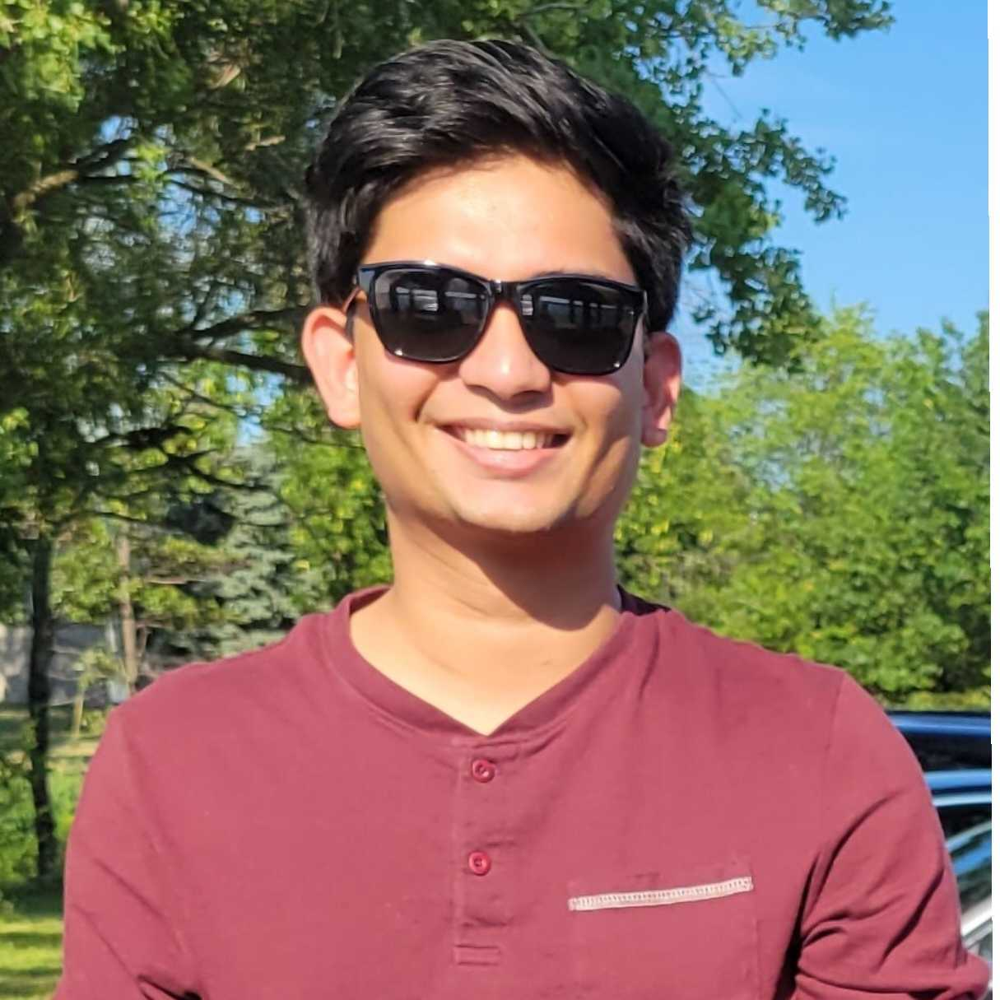
Aniket Burde
M.S. in Robotics
Hello, I'm Aniket, a robotics graduate currently working on Micro Aerial Vehicles (MAVs) and
exploring the exciting world of autonomous flight. In addition to my work on MAVs, I'm also
passionate about creating robots that can interact with humans in new and innovative ways. Recently,
I've been working on a small robot puppy project, which involves designing and building a miniature
robotic dog that can mimic the movements and behaviors of a real puppy. Outside of my work, I'm an
avid sports enthusiast. I'm always on the lookout for new challenges and opportunities to learn, and
I'm committed to making a positive impact on the world through my work in robotics.
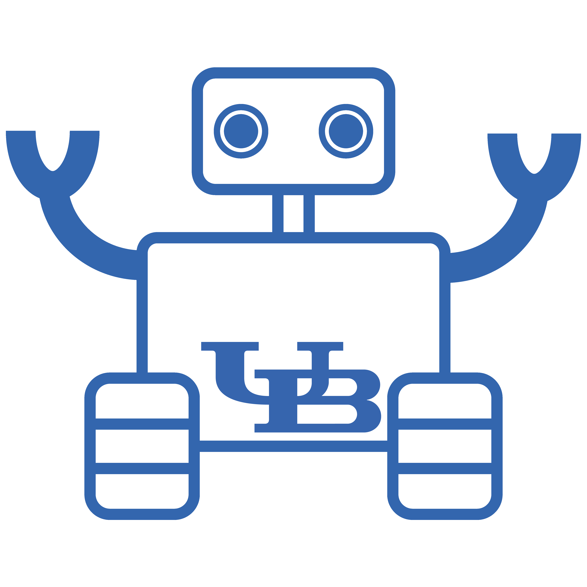
Sam Smullen
M.S. Mechanical Engineering
Hey, I'm Sam! My research is in the application of control systems in tiny, fast jumping
microrobots. Currently, I'm researching the implementation of feedforward control in latch-mediation
spring actuation (LaMSA) systems. Outside of research, I enjoy hiking, wakeboarding, and composing
music.
Undergraduate Students
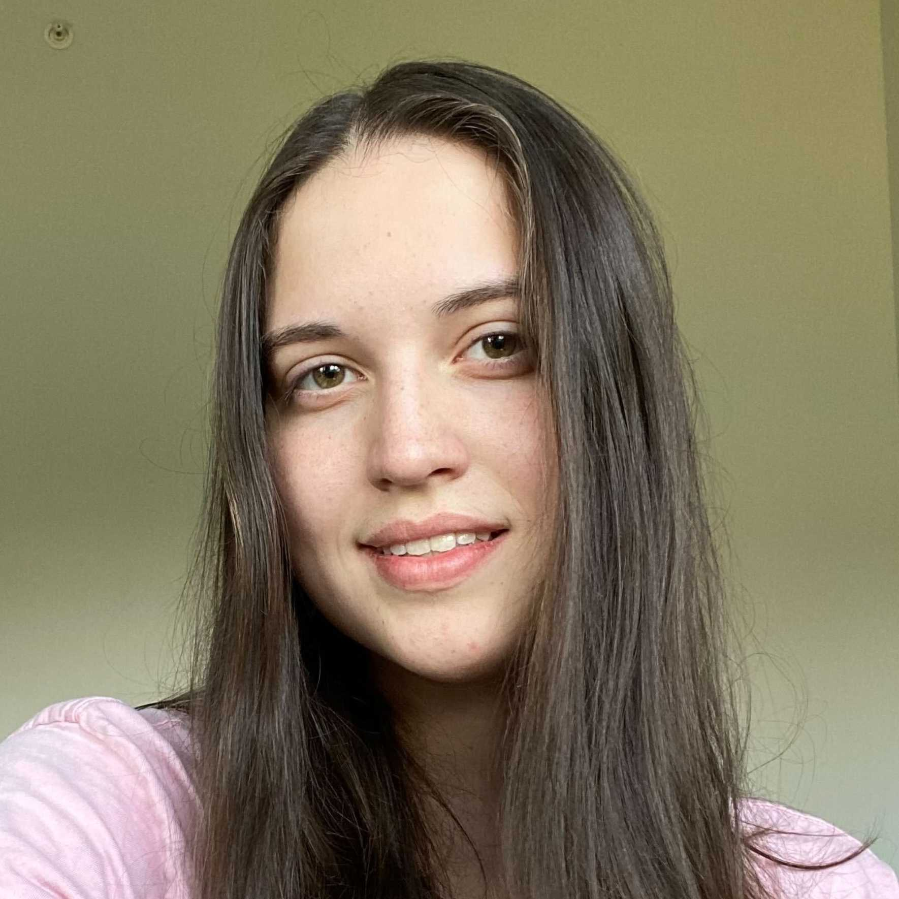
Vasilisa Ignatova
B.S. Computer Engineering
Hi! My name is Vasilisa and I’m third-year computer engineering student. I’m originally from NYC and
some of my favorite activities include painting, crocheting and playing the electric guitar. My
current research interests revolve around swarm robotics.
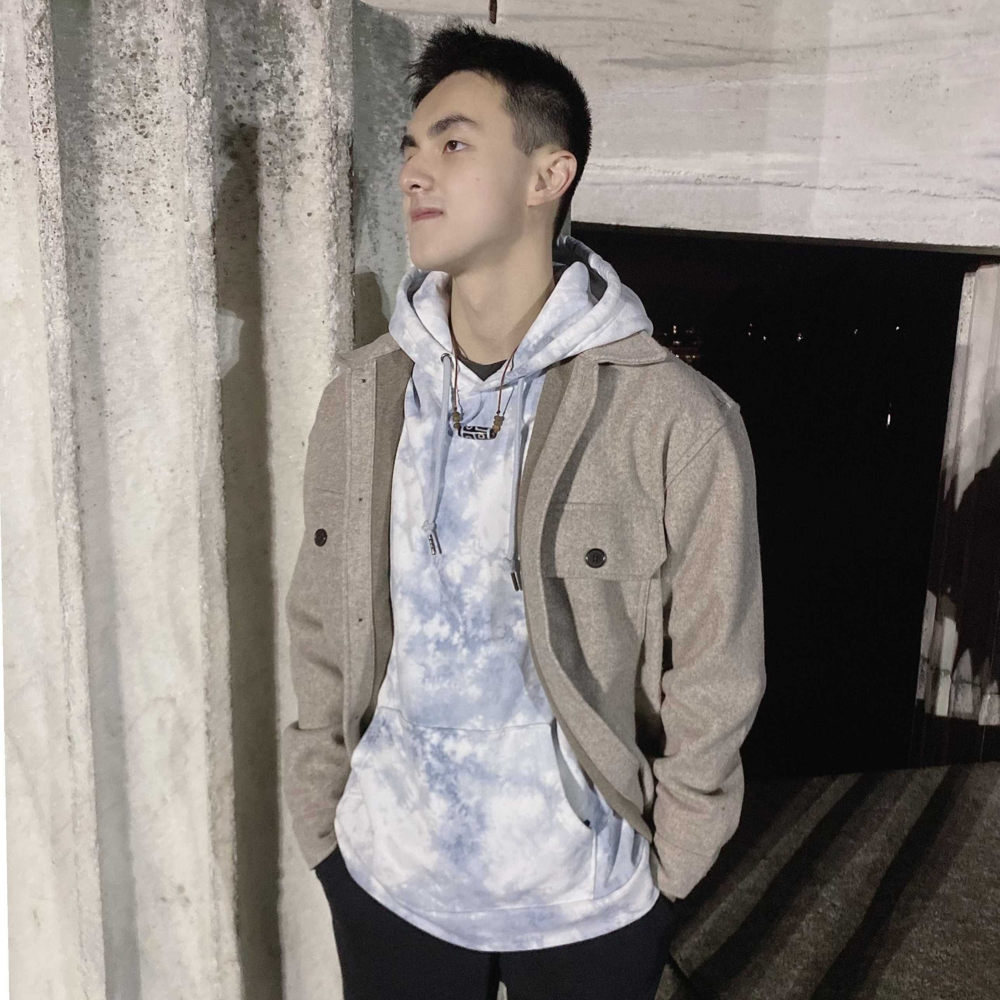
Eric Xie
B.S. Computer Science| Minor in Robotics
My name is Eric. I am working on iOS app for Buffalo Bytes robot platform and object and face
detection on power constrained small robots. I enjoy watching movies. Some of my all time favorite
movies are “3-idiots”, “Forest Gump”, “Pursuit of Happyness”, and all Marvel movies before and
including “Spider-Man: No Way Home”. I also make IOS apps and websites in my free time. If you have
an app in mind, I’ll be happy to help.
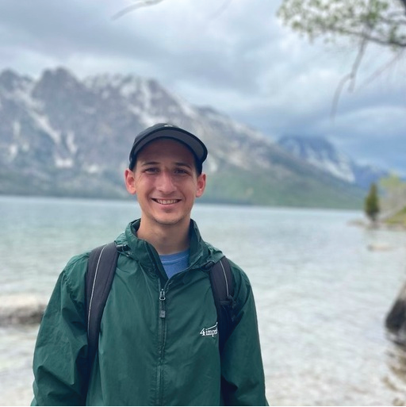
Nolan Skowronski
B.S. Mechanical Engineering
Hello! My name is Nolan Skowronski. I am an undergraduate student studying Mechanical Engineering at
the University at Buffalo. In the lab, I am focused on small scale jumping robots, but I also have
an interest in solar powered robots. Outside the lab however, I love being in nature by hiking,
camping, kayaking, biking, and snowboarding.
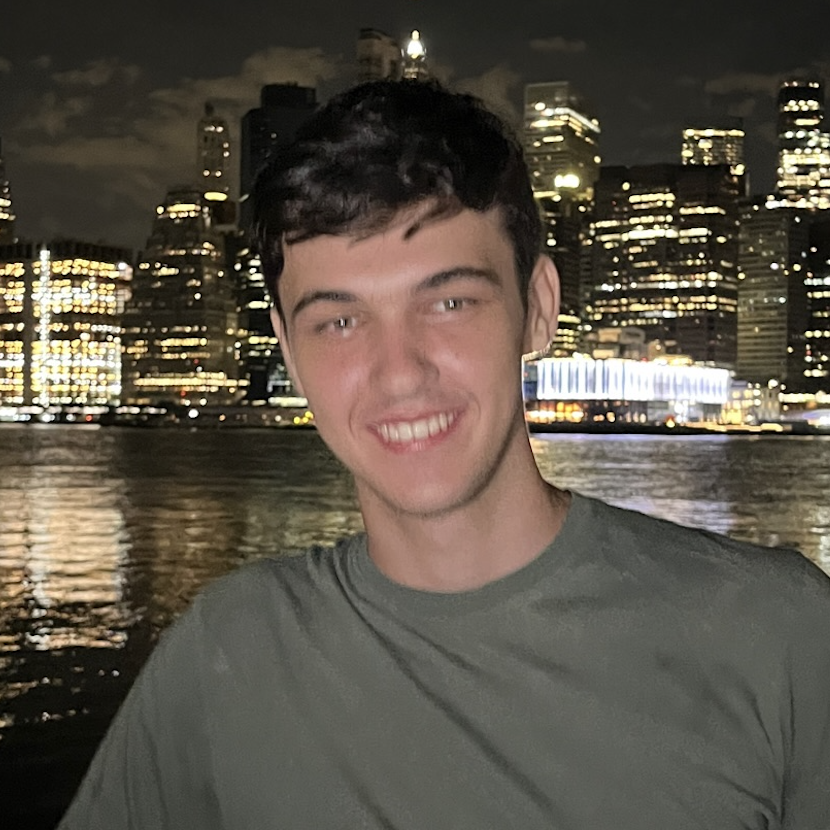
Volodymyr Semenov
B.S. Computer Engineering
Hey, my name is Vlad. I am a sophomore computer engineering student. In the lab, I am currently
working on hovering robots that move by deflecting air. I also enjoy cooking, watching football, and
playing with my cats.
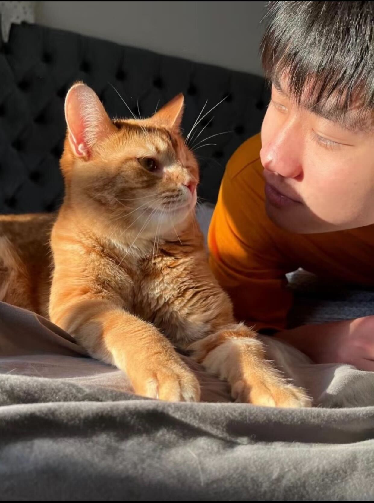
Yuki Wu
B.S. Aerospace Engineering
My name is Yuki. I am a senior aerospace engineering student. I am currently working on a spherical
robot. Outside of the lab, I enjoy playing basketball and exploring new places through travel.
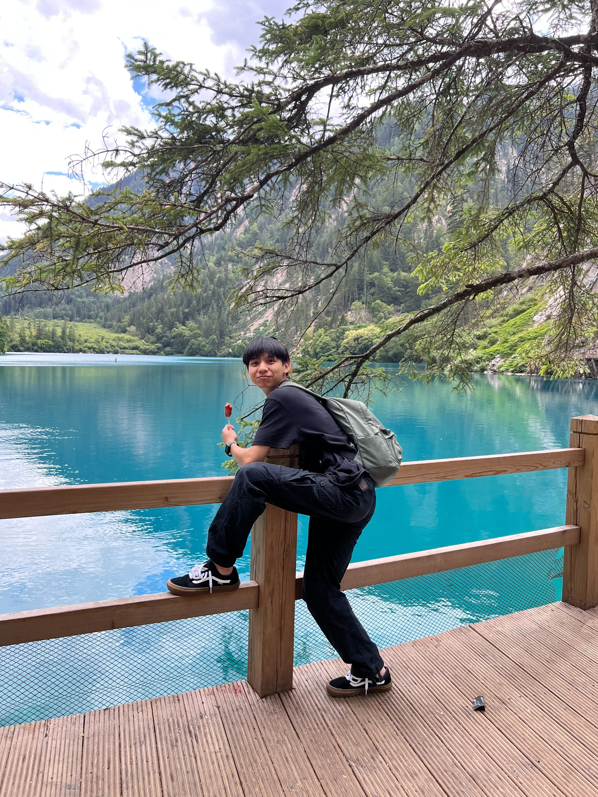
Junyu Lu
BS Mechanical Engineering
I'm Junyu Lu, a senior mechanical engineering student interested in how to design the mecahnics of
microrobots. In the lab, I am focusing on spherical robots, trying to incorporate multiple features
within a limited space. Outside of the lab, I enjoy playing basketball and trying new things when
I'm free.
Megdess Negussie
B.S. Computer Engineering
Hey, my name is Meg. I am an artist turned engineer hailing from Rochester, NY. Rising senior
studying computer engineering and robotics. Interested in biomechanics and physics, but outside the
lab, I enjoy reading, taking apart antique machines, and accumulating extremely nice stationery.
Kyle Pestar
B.S. Mechanical Engineering and B.S. Electrical Engineering
Hi my name is Kyle, I am currently an undergrad studying Mechanical and Electrical Engineering. I am
currently working on control systems for the Buffalo Bytes. Besides robotics my other interests
include camping and fishing.
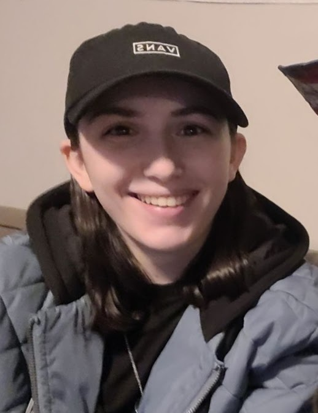
Gianna Germain
B.S. Mechanical Engineering and Computer Science Minor
Hey! I'm Gia, a junior Mechanical Engineering student. My research focuses on creating jumping robots
that use a two-spring torque reversal system. Outside of lab though, I really enjoy hiking, playing guitar,
and cruising on my longboard.
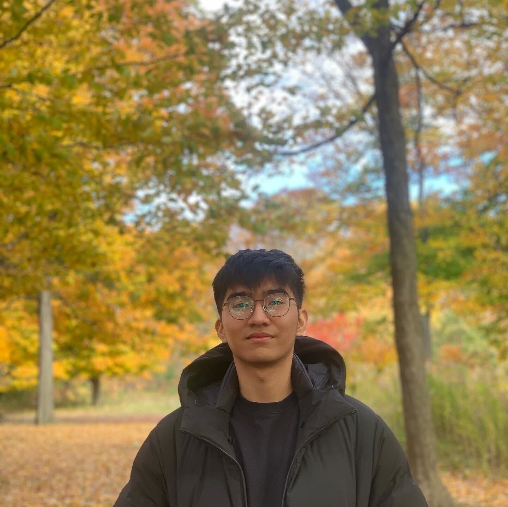
Le Quoc Viet Pham
B.S. Computer Engineering
Xin Chao, my name is Viet, and I am an international student from Vietnam.
It has been nearly a year since the day I landed in the US to study abroad, everything was fascinating (even though I'd suffered a lot).
Robotics is an interesting field for me, and I just started my journey recently. I hope that I can explore and learn more through new projects.
Besides that, I love playing sports, reading (comic) books, and traveling.
Spencer Rustyak
B.S. Mechanical Engineering
Hi, my name's Spencer. I'm a freshman mechanical engineering student with an interest in robotics and design.
Currently in the lab I'm making a basic design for a material robot. Outside of the lab I enjoy drawing, reading, and learning about new things.
Alumni
Masters
Aniket Vishwakarma, M.S. Mechanical Engineering 2023, Ph.D. student at the University at
Buffalo
Yaswanth Narayana, M.S. Mechanical Engineering 2023, Arrow Systems, Inc.
Shashwat Singh, M.S. Robotics 2023, Ph.D. student at Carnegie Mellon University
Yaghnya Reddy Kuchikulla, M.S. Mechanical Engineering 2022, Remora
Amin Malek Pour, M.S. Mechanical Engineering 2022, GE Transport
Leanne Jamieson, M.S. Mechanical Engineering 2022
Bachelors
Patrick Harrington, B.S. Aerospace Engineering 2023, General Dynamics Mission Systems
John Cemay, B.S. Aerospace Engineering 2022, CAE USA